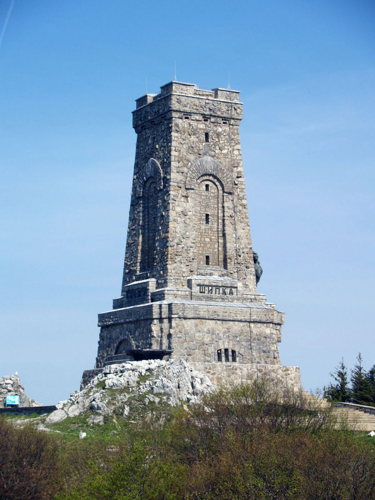
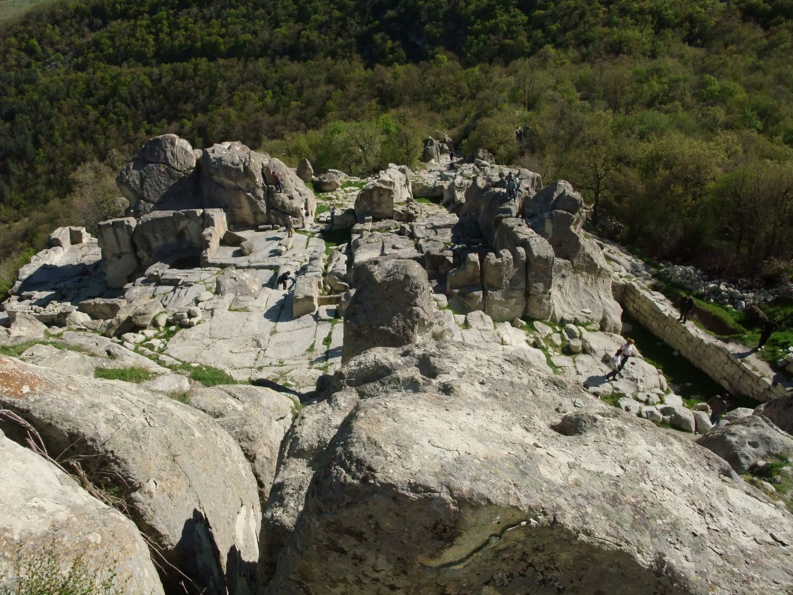

Шипка е връх в Стара планина с надморска височина 1326 метра, разположен на изток от Шипченския проход.
До 23 ноември 1951 г. върхът носи името Свети Никола, а след това до 7 октомври 1977 г. – връх Столетов.
През 1934 г. на върха е построен Паметникът на свободата, до който водят автомобилен път и каменно стълбище. Паметникът е част от Парк-музей „Шипка“. Шипка се нарича и върхът
(с височина 1232 m), разположен на север от главното било и на запад от Шипченския проход.По време на Руско-турската война (1877 – 1878) в началото на август 1877 г. генерал
Николай Столетов организира отбраната на Шипченския проход, като разполага Шипченския отряд (в който влизат и 1, 2, 3, 4 и 5 дружина на Българското опълчение) на връх Св. Никола,
връх Орлово гнездо и връх Шипка. Решителните сражения се водят от 21 до 26 август 1877 г. Защитниците показват изключителен героизъм и въпреки численото превъзходство на противника,
атаките са отблъснати. Паметникът на свободата на връх Шипка е сред 100 национални туристически обекта на БТС под номер 93. Печат има на касата.

Баба Вида, наричана също Бабини Видини кули, е средновековна крепост във Видин.
Считана е за единствената изцяло запазена крепост в България.
Името Баба Вида, с което е известна днес, произхожда от народна легенда.
×Legend
Живял някога български болярин, който бил заможен и много имотен.
Обширните му владения се простирали на територии от Карпатите до Стара планина. Той имал три дъщери - Вида, Гъмза и Кула.
Когато се споминал, те разделили бащините имоти помежду си.
Едната сестра Кула се задомила на територията на сегашния български град Кула, другата сестра - Гъмза се омъжила в Сърбия в земите на днешен Гъмзиград.
Но двете девойки прибързали в избора си на съпруг и случили на лоши мъже, които пропилели бащиното им наследство с лека ръка и изгубили всичко.
Най-възрастната сестра от трите - Вида не се задомила, а останала цял живот сама.
Тя изградила със собствени средства замък, където доживяла до дълбока старост.
Крепостното укрепление успешно защитавало поданниците и земите й от чужди нападения.
След смъртта на Вида в знак на благодарност местните хора нарекли замъка Баба Вида или Бабини Видини кули.
Крепостта е известна така и до наши дни.
Крепостта е служела за защита на местния владетел през почти цялото Средновековие.

Перперико̀н или Перперѐк (на латински: Perpericon; на гръцки: Περπερικον) е археологически комплекс в Източните Родопи, състоящ се от голямо
мегалитно светилище от преди 8000 години през каменната ера, паметници от античността и средновековна крепост. При траките, Перперек е свещен
скален град, столица и крепост с царски дворец. По-късно тук са живели римляни, готи, ромеи и българи. Унищожен е от османските турци в XIV в.